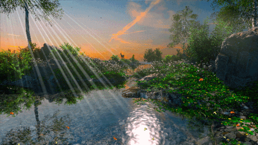

🦋 Welcome to the World of Butterflies! 🦋
➺ Enter the beautiful world of butterflies, where nature's fragile creations take flight! Butterflies capture hearts and inspire amazement around the world, with their vivid colors and graceful motions.
➺ Whether you're a nature lover, an aspiring lepidopterist, or simply interested about these amazing animals, this website is your portal to learning about their beauty, life cycle, habitats, and the crucial role they play in our environment.
➺ Discover gorgeous photographs, interesting facts, and ways you can help preserve butterfly populations. Let us go on this amazing journey together!
